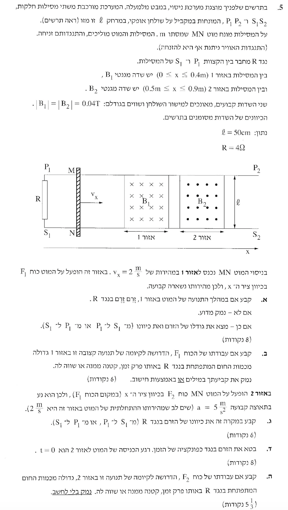

פתרון מודרך, צעד-אחר-צעד בדגש על עבודה, אנרגיה וכא"מ מושרה
שאלה זו משלבת יחד מכניקה ותופעות אלקטרומגנטיות. אנו חוקרים מוט מוליך הנע על מסילות בתוך שדה מגנטי, מה שיוצר כא"מ מושרה (תופעת ההשראה האלקטרומגנטית).
נצטרך להשתמש בחוקי ניוטון כדי לנתח את הכוחות הפועלים על המוט (כוח חיצוני לעומת כוח מגנטי), בחוק שימור האנרגיה כדי להבין אילו המרות אנרגיה מתרחשות במערכת, ובכלל יד ימין (או חוק לנץ) כדי לקבוע את כיוון הזרם החשמלי.

כאשר המוט המוליך חותך את קווי השדה המגנטי, מופעל כוח מגנטי (כוח לורנץ) על המטענים החופשיים בתוכו. כתוצאה מכך נוצר הפרש פוטנציאלים (כא"מ מושרה) בין קצות המוט. מכיוון שהמעגל סגור (המוט, המסילות והנגד יוצרים לולאה), אכן יזרום זרם חשמלי במעגל.
על פי כלל יד ימין למטענים חיוביים (האגודל כיוון המהירות ימינה, האצבעות כיוון השדה המגנטי פנימה לתוך הדף), הכוח המגנטי הפועל על המטענים החיוביים שבמוט מכוון למעלה (אל עבר קצה \( M \)). משמעות הדבר היא שקצה \( M \) של המוט מתפקד כהדק החיובי של ה"סוללה" שנוצרה, והקצה \( N \) כהדק השלילי.
מכיוון שהזרם במעגל החיצוני (מחוץ ל"סוללה" שיוצר המוט) תמיד זורם מהפוטנציאל הגבוה לנמוך, הזרם ייצא מקצה \( M \), ינוע לאורך המסילה העליונה אל \( P_1 \), ירד דרך הנגד מ- \( P_1 \) אל \( S_1 \), ויחזור דרך המסילה התחתונה ל-\( N \).
כן, זורם זרם במעגל. כיוונו דרך הנגד הוא מ- \( P_1 \) ל- \( S_1 \), וגודלו \( 0.01\,\text{A} \).
נתון שמהירות המוט קבועה, כלומר התאוצה שלו היא אפס (\( a = 0 \)). לפי החוק השני של ניוטון, שקול הכוחות בציר האופקי חייב להיות אפס (\( \Sigma F = 0 \)). המשמעות היא שהכוח המכני החיצוני \( F_1 \) השואף להאיץ את המוט ימינה, מאזן בדיוק את הכוח המגנטי (כוח אמפר) שפועל שמאלה ומתנגד לתנועה.
מהו הכוח הזה? בסעיף א' ראינו שתנועת המוט בשדה המגנטי יוצרת כא"מ מושרה, ולכן זורם זרם במעגל. מרגע שיש זרם במוט עצמו, והמוט נמצא בתוך שדה מגנטי, השדה מפעיל על התיל הנושא זרם כוח מגנטי. זה בדיוק החומר המוכר: ברמה המיקרוסקופית כוח לורנץ פועל על המטענים הנעים בתוך המוט, וברמה המאקרוסקופית מחברים את כל הכוחות הקטנים האלה ומקבלים כוח אחד על המוט כולו, שנקרא כוח אמפר.
במערכת שלנו הזרם זורם לאורך המוט, ואילו השדה \( B_1 \) מאונך למישור השולחן, ולכן הזווית בין כיוון הזרם לבין כיוון השדה היא \( 90^\circ \). את כיוון הכוח קובעים בכלל יד ימין לתיל נושא זרם: האגודל בכיוון הזרם, האצבעות בכיוון השדה, והדחיפה של כף היד נותנת את כיוון הכוח. כאן הכוח המגנטי פונה שמאלה, ולכן הוא מתנגד לתנועה ימינה.
אם רוצים גם לחשב את גודל הכוח, מציבים את הזרם שמצאנו בסעיף א': \( I = \frac{\mathcal{E}}{R} = \frac{B\ell v}{R} \). לכן מתקבל \( F_B = BI\ell = B\left(\frac{B\ell v}{R}\right)\ell = \frac{B^2 \ell^2 v}{R} \). עבור הנתונים כאן נקבל \( F_B = 2 \cdot 10^{-4}\,\mathrm{N} \), ולכן גם \( F_1 \) שווה בגודלו לערך הזה.
כעת נבחן את מאזן האנרגיה: על פי חוק שימור האנרגיה הכללי, העבודה שמבצע הכוח המכני החיצוני משמשת להוספת אנרגיה למערכת. מכיוון שהמהירות קבועה, האנרגיה הקינטית של המוט אינה משתנה (\( \Delta E_k = 0 \)).
לכן, כל העבודה שמשקיע הכוח המכני \( F_1 \) מומרת לחלוטין לאנרגיה חשמלית במעגל. במעגל החשמלי שלנו ישנו רק נגד אידיאלי, ולכן כל האנרגיה החשמלית הזו מתפזרת ומתבזבזת כאנרגיית חום בנגד.
עבודת הכוח החיצוני \( F_1 \) שווה בדיוק לכמות החום המתפתחת בנגד.
למרות שיש תאוצה, מהירות המוט ממשיכה להיות מכוונת ימינה באזור 2 (שכן הוא נכנס במהירות חיובית והתאוצה גם היא חיובית ימינה).
נפעיל שוב את כלל יד ימין על המטענים החיוביים החופשיים במוט: האגודל ימינה (כיוון המהירות), האצבעות החוצה מהדף (כיוון השדה המגנטי). כף היד, המייצגת את כיוון הכוח על מטען חיובי, תפנה למטה.
המשמעות היא שהכוח המגנטי דוחף את המטענים החיוביים אל עבר קצה \( N \). לכן, באזור זה קצה \( N \) הופך להדק החיובי של ה"סוללה". הזרם יצא מ-\( N \), יזרום למטה ל-\( S_1 \), יעלה דרך הנגד אל \( P_1 \), ויחזור דרך המסילה ל-\( M \).
הזרם במקרה זה ינוע דרך הנגד מ- \( S_1 \) ל- \( P_1 \).
מאחר שהמוט נע בתאוצה קבועה, נשתמש במשוואת הקינמטיקה למהירות:
הכא"מ המושרה נוצר עקב מהירות המוט. מכיוון שהמהירות משתנה בזמן, גם הכא"מ ישתנה בזמן, וכפועל יוצא – גם הזרם.
כעת נחשב את הזרם (לפי חוק אוהם למעגל השלם, כשאין התנגדות פנימית ל"סוללה" שלנו):
הביטוי לזרם כפונקציה של הזמן הוא: \( I(t) = 0.01 + 0.025t \) (ביחידות אמפר).
כפי שראינו בסעיף ב', העבודה של הכוח החיצוני משמשת להוספת אנרגיה למערכת הפיזיקלית. אלא שבמקרה הנוכחי באזור 2, האנרגיה הזו לא מומרת רק לחום. על פי חוק שימור האנרגיה, העבודה של \( F_2 \) מתחלקת לשני צרכים במקרה שלנו:
מכיוון שהמוט מאיץ באזור 2, גודל מהירותו עולה עם הזמן. לכן, ישנה תוספת חיובית של אנרגיה קינטית (\( \Delta E_k > 0 \)).
מכאן נובע בהכרח שעבודת הכוח המכני \( F_2 \) חייבת לספק גם את האנרגיה שהפכה לחום בנגד, וגם את האנרגיה שנדרשה להאצת המוט. לכן היא בהכרח חייבת להיות גדולה יותר מאנרגיית החום בלבד.
עבודת הכוח \( F_2 \) גדולה מכמות החום המתפתחת בנגד.